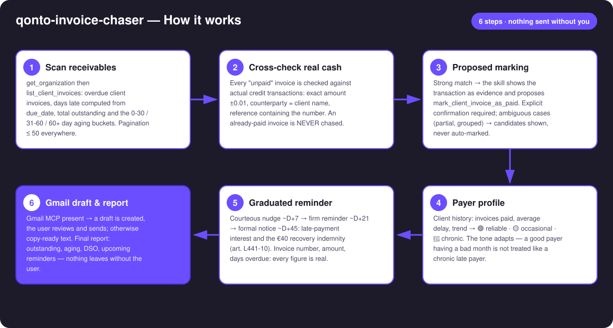
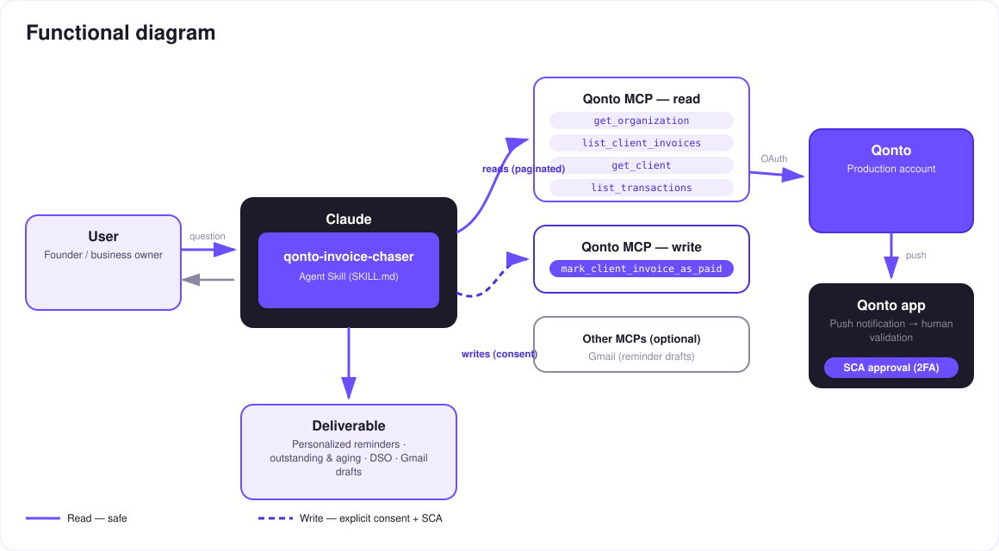

Chase late invoices without burning the relationship — the chaser that checks the bank before it writes.
B2B invoices in France get paid 11+ days late on average — and chasing them is the chore everyone postpones. The skill turns a Qonto account into a collections assistant that never damages a client relationship:
Late client invoices by due_date, days overdue, total outstanding, aging buckets 0-30 / 31-60 / 60+.
An "unpaid" invoice may already be paid: amount / counterparty / reference matching → marking proposed, never silent.
Reliable-but-late ≠ chronic late payer. Courteous D+7 → firm D+21 → formal notice D+45 (interest + €40).
Gmail MCP present → the reminder lands as a draft: you review, you send. Otherwise copy-ready text. Nothing leaves on its own.
Would someone use this on a Monday morning? Chasing receivables is the Monday-morning chore — this makes it a two-minute review.
| Prerequisite | Detail | Required |
|---|---|---|
| Qonto production account | Adapts to any organization — get_organization first, nothing hardcoded | ✅ |
| Country | Full legal kit (interest + €40 indemnity, art. L441-10): France. Other Qonto countries: identical graduated reminders, generic reference to EU Directive 2011/7/EU — never invented rates | ℹ️ detected |
| Qonto MCP connected | Official connector (claude.ai / Claude Desktop), OAuth login | ✅ |
| Client invoices in Qonto | The skill reads list_client_invoices; with no Qonto invoicing there is nothing to chase — and it says so | ✅ |
| Gmail MCP | Optional, detected dynamically: present → reminder drafts; absent → copy-ready text | ⭕ recommended |
| Invoicing history | Feeds the payer profile; without it: standard tone + a warning | ⭕ |

list_transactions cross-check catches it (exact amount ±0.01, counterparty ≈ client name, reference containing the invoice number) and proposes mark_client_invoice_as_paid with the transaction as evidence — the most expensive email in B2B is the reminder sent to a client who already paidget_client, with a suggestion to complete the record — never a guessed address
The skill writes; the user decides: reads (solid arrows) are risk-free; the two writes (dashed) are proposed actions — marking an invoice paid requires explicit confirmation in the conversation, and the reminder only ever exists as a draft that the user alone reviews and sends. No email leaves without you.
| Step | When | Register | Must contain |
|---|---|---|---|
| Courteous nudge | ~D+7 | Warm, assumes oversight | Invoice number, amount incl. VAT, due date, payment means as stated on the invoice |
| Firm reminder | ~D+21 | Firm, factual | Same + days overdue, reference to the first reminder, announced next step |
| Formal notice | ~D+45 | Formal, legal | Same + late-payment interest (contract rate, else ECB refi + 10 pts, floor 3× the French legal rate) computed to the day + €40 recovery indemnity per invoice (art. L441-10 & D441-5 French Commercial Code) + payment deadline + registered mail advised |
| Profile | Detected from | Effect on the reminder |
|---|---|---|
| 🟢 Reliable, exceptionally late | Invoices always paid, low average delay | Warmest register, benefit of the doubt ("24 invoices, always paid, avg 5 days late → warm tone") |
| 🟡 Occasionally late | Sporadic delays in history | Standard ladder |
| 🔴 Chronically late | High average delay, repeated reminders | Never the warmest register — but always correct and factual |
| Output | Format | When |
|---|---|---|
| Conversation reply | Markdown tables (outstanding, aging, per-invoice action table) | Always — the baseline |
| Gmail draft | Complete email: recipient, subject with the invoice number, personalized body | When the Gmail MCP is connected; automatic fallback to copy-ready text |
| Copy-ready text | Subject + body, paste into any email client | Without the Gmail MCP |
| Interactive dashboard | HTML file/artifact: aging bars, top late clients, reminder pipeline | When the host renders files; fallback to tables otherwise |
The ≤ 3-minute demo attached to the PR walks through: the problem → the scan + cross-check (an already-paid invoice caught before any reminder) → the payer profile → the draft appearing in Gmail with the exact numbers → the receivables report. It runs live on a real production account.
| Idea | Effort | Note |
|---|---|---|
Payment link inside the reminder (create_payment_link) | Low | The client pays in one click from the email — payment links work despite the MCP doc |
| Per-country legal kits (DE · ES · IT · AT · NL · BE · PT) | Medium | Each country's transposition of EU Directive 2011/7/EU |
| Scheduled Monday-morning run | Low | The ritual becomes an appointment |
| Full order-to-cash cycle upstream (quote → invoice → payment matching) | Medium | Feeds the chaser |
delete_client_invoice; test drafts cleaned up · masked IBANs · pagination ≤ 50